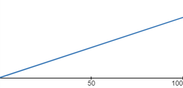
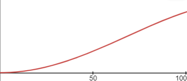

The JPEG format is amazing, in fact, I would say it's more intersing than PNG's LZSS + Huffman Coding DEFLATE Algorithim.
JPEG has all good sides – Small images, less time to encode and decode, etc.
JPEG has 1 downside though – JPEG Artifacts.
Those artifacts annoy the frick out of me, so I decided to "optimise" the decoding/decompression process.
NOTE: I am not changing the way the image is encoded. In this page I will demonstarte things the decoder can do to help fix the artifacts.
Let's start!
Chroma Subsampling is the process in the JPEG encoder where the Cb and Cr components of the image is downscaled by a factor of 2 to save space.
The downside of this process is that it leaves (upon decoding) this, bulgy, ugly, and horryifying 2x2 block of same color. It doesn't look good at all.
NOTE: I am saying these critisisms if the image did not have the Y component. That fixes the image somewhat.
The critisism I said above goes for smaller images, but still if you zoom in an image you will see it, eventually.
So we can apply some algorithim to smoothen the subsample upon decoding, right?
Well, that works, but it looks like this in the case of C{b/r} case:
^ Subsample value from 23 to 56 from a smoothing 0...100
Math equation is f(x) = p0 + x(p1 - p0)
It's fine compared to justs blocks of color, but it doesn't look natural, because we're using linear interpolation (lerping.)
Luckily, some random person invented something called the 'slerp'. It's lerping but it's triginomical.
Were going to do a hybrid of lerping and slerping, which outputs:
That looks a lot better, doesn't it? It has a lot more life than the previous one.
Math equation is f(x) = p0 + x(p1 - p0) * sin(x/0.5pi)
You can then apply this f(x) to the rows of the decoded subsample and then the columuns of the subsample, and boom, smoothed subsamples.
NOTE: This subsample-fixer algorithim may not restore all color of the previous state of the image. The f(x) function predicts that the orginal unsampled data grew gradually instead of crazy growth.
If you know the JPEG format then the Luma component may be a challenge to remove artifacts from. Well, yes it is, because you can't predict the quality of an image to restore a sample. So, if we want to go the easy route, we have to work with a constant quailty factor.
BUT That's for cheaters!
We want a algorithim that fixes the Luma part of the image without a hardcoded quailty factor. This is the hard route, people.
NOTE: The Luma part of the image will be restored more awfully than the Cb/Cr parts of the image because the JPEG formats goes "haha losing luma component info go bRRRRRRRRRRRRRRRRRRRRR"
I had 2 ways of doing this:
1. "Error-Correction" Discrete Cosine Transform
2. Predicting the quality of a 8 by 8 chunk
(I call this algorithim fDCT.)
The way how fDCT works is by reconstructing the chunk and then detecting high frequences out of nowhere via deriatives.
If a deriative of the image chunk i(x): x, y -> x + yw still has these high out of nowhere frequences, then we do somehting called: Another Deriative. I never knew it ws rocket science. Anyway, here's a C-like psudeocode implemantion
struct jpeg_chunk fix(struct jpeg_chunk chk, float ins) {
struct jpeg_chk_f line = construct(chk);
line = deriative(line);
for(int i=0;i is smaller than 64;i++) {
if(line.vis[i] >= ins) {
mark vis[i] as a artifact and blend it
}
if(line.vis[i] - line.vis[i--] >= ins * 2) {
line = deriative(line);
i = 0;
}
}
struct jpeg_chunk ret = assemblechunk(line);
return ret;
}I think this algorithim is both easy and hard. Easy for humans, (time) complex for computers
Not finished yet.